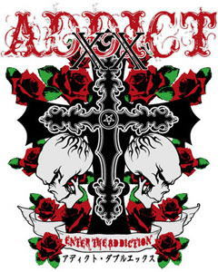
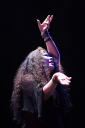

●７月13日（日）川崎CLUB CITTA
ADDICT XX アディクト・ダブルエックス
With:bqpd (TOKYO)
DEMIGOD (TOKYO)
Gallhammer (TOKYO)
HEAD PHONES PRESIDENT (TOKYO)
INSECT MUCUS (TOKYO)
Lapis Lazuli (OKINAWA)
SKULL FUCK (SENDAI)
SoundWitch (OSAKA)
STONE DAVIS (TOKYO)
SUICIDE (TOKYO)
TorN (YOKOSUKA)
Pain Loops Zealot (OKINAWA)
6ft.down (TOKYO)
大鴉 (OKINAWA)

■主催■
CLUB CITTA'
■企画制作■
413TRACKS,Inc.
CLUB CITTA'
■協力■
DISK UNION
BLITZ
●ＪＵＲＡＳＳＩＣ ＪＡＤＥ’Ｓ setlists
1. ドク・ユメ・スペルマ
2. 触れてはいけない
3. Left Eye On The TV
4. G.D.G
5. Smell Of The Pebble
6. 我が名はHizumi
7. Endoplasm
8. Mimic Cry
9.Let's Go Heroes
10.The Individual D-Day〜精神病質（Seishin-Byo-Shitsu）〜Go To The Dogs
11.鏡よ鏡
12.Hemiplegia
●ＭＥＭＢＥＲ’Ｓ comment
ＨＩＺＵＭＩ
ＮＯＢ
GEORGE
ＨＡＹＡ
●ＡＬＢＵＭ
 |
| (C)Photo by Satoshi Yamaguchi （So Heavy） |
●BBS comment
お疲れ様でした 投稿者：さる 投稿日：2008年 7月13日(日)23時59分49秒 編集済
目黒＆川崎の二連荘参戦となりました。両日ともに素晴らしいライブで、たくさんの元気を受けることができました。ありがとうございます。
両ライブとも、たっぷりの時間とそれぞれの日で違う構成だったこともあって、大満足です。初ライブ体験となった新作からの後半三曲は非常に印象的。
とくにタイトル曲となる「Endoplasm」は曲の持つ意味合いもあるのですが、それ以上になんというか包み込んでもらっている感じが強くて、とても暖かくなりました。
そして、目黒のアンコールは「ベースマン…」。JJの思いが伝わりました。川崎でも、もう一曲欲しかったのですが…この日はしょうがないですね（苦笑）。
目黒ライブの模様をﾁｮﾋﾟﾘとｱﾌﾟ。次回参戦は久々に遠征することになりそうですので、またよろしくお願いします。
PS：土曜は打ち上げまで。ありがとうございました。
http://home.g03.itscom.net/boana/
濃い二日間を終えて 投稿者：NOB-JURASSIC JADE 投稿日：2008年 7月14日(月)19時17分37秒
JURASSIC JADE「ENDOPLASM」レコ発ライブ〜ADDICT XX（アディクト・ダブルエックス）の濃い二日間が終わりました。
見てくださった方々、対バンの方々、スタッフの方々、お疲れ様でした。
私達にとっても、とても充実したそして楽しい二日間でした。
私達のことだけではなく、どちらのイヴェントも素晴らしかったので、もっと沢山の方々に見てもらいたかったし、見られなかった方々は大事な物を見逃したのでは？と思います。
「もったいない」感じです。（笑）
JURASSIC JADEの今週末は名阪２daysです。
●７月19日（土）難波ROCKETS
"GOOD RIDDANCE vol.82"
OPEN: 18:00 START: 18:30
ADV:\1300 AT DOOR:\1600
With: LOVE IS DEAD/DROWNED MIND
FIVE NO RISK/CYBERNE
●７月20日（日）名古屋栄TIGHT ROPE
[JURASSIC JADE "ENDOPLASM"レコ発in 名古屋]
OPEN:18:00 START:18:30
ADV:\1800+1DRINK(￥500)
AT DOOR:\2300+1DRINK(￥500)
With:BOLD FAT MISSILE/RIVERGE
CYBERNE/RIGHTBRAIN
それぞれの地のバンドさんのご好意で呼んでいただいてます。
是非!!お越し下さい。
チケット予約受付中です。
メールお待ちしてます!!
＞さる 様
目黒・打ち上げ・川崎とメンバーと同じような時間の過ごし方に感謝します。
疲れたでしょう?
「ベースマンは死なず」はさるさんの日記からヒントをいただいてアンコールにしました。
川崎では演奏終了後に
「All the things were taken by force named justice」のコーラスを皆さんが叫んでくれて感動しました。
遠征先でお待ちしてます。
BACK TO